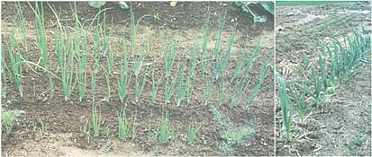

(LEFT) Onions planted from seed in the foreground compared to those planted at the same time, but from sets, in the background. (RIGHT) This garlic is off to a good start early in the spring because it was planted the fall before. Note that most of the garden hasn't even been planted yet, save some spinach on the background.